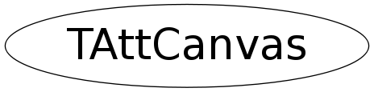

class TAttCanvas
Manages canvas attributes. Referenced by TStyle.
Function Members (Methods)
public:
| TAttCanvas() | |
| TAttCanvas(const TAttCanvas&) | |
| virtual | ~TAttCanvas() |
| static TClass* | Class() |
| virtual void | Copy(TAttCanvas& attcanvas) const |
| Float_t | GetAdate() const |
| Float_t | GetTitleFromTop() const |
| Float_t | GetXBetween() const |
| Float_t | GetXdate() const |
| Float_t | GetYBetween() const |
| Float_t | GetYdate() const |
| virtual TClass* | IsA() const |
| TAttCanvas& | operator=(const TAttCanvas&) |
| virtual void | Print(Option_t* option = "") const |
| virtual void | ResetAttCanvas(Option_t* option = "") |
| virtual void | SetAdate(Float_t adate) |
| virtual void | SetTitleFromTop(Float_t titlefromtop) |
| virtual void | SetXBetween(Float_t xbetween) |
| virtual void | SetXdate(Float_t xdate) |
| virtual void | SetYBetween(Float_t ybetween) |
| virtual void | SetYdate(Float_t ydate) |
| virtual void | ShowMembers(TMemberInspector& insp) |
| virtual void | Streamer(TBuffer& b) |
| void | StreamerNVirtual(TBuffer& b) |
Class Charts
{kind=link}
{kind=link}
{kind=link}
{kind=link}
